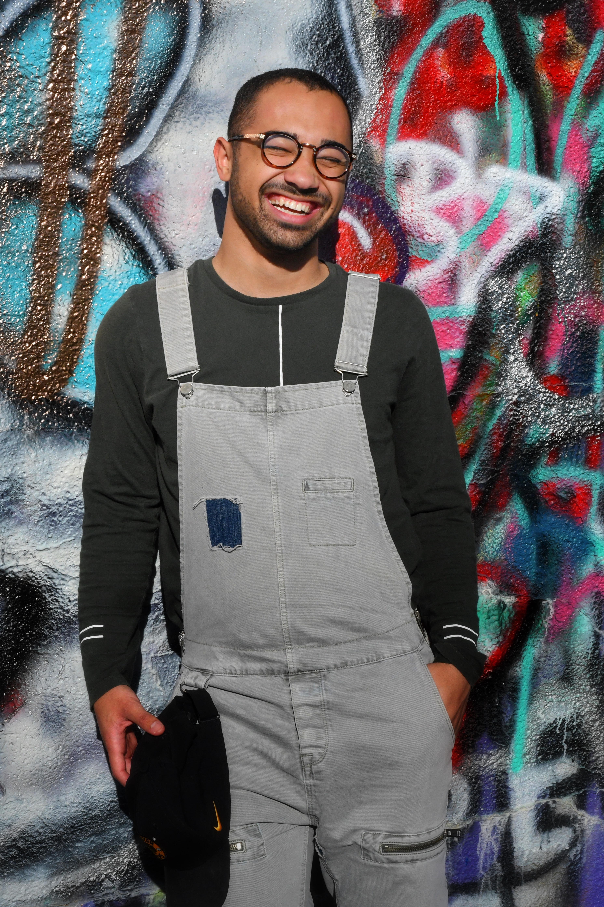

Leadership
Executives
Executive Director: Lee Ulrich
Lee Ulrich has been our director since the dawn of Sunny Side! They gives our school it's upbeat feel and keep us focused on our vision of happy children, families, and staff.
Assistant Executive Director: John Lashter
 John supports our operations and was a founding member of our team. He helps ensure we stay on the path to early childhood success.
John supports our operations and was a founding member of our team. He helps ensure we stay on the path to early childhood success.
Principal Andy Stanton
 Principal Stanton supports our teaching staff and regularly audits classroom activity to find new and exciting ways to enrich the education of our students.
Principal Stanton supports our teaching staff and regularly audits classroom activity to find new and exciting ways to enrich the education of our students.
Teachers
Tina Hanks (lead teacher)
 Tina has a masters in early childhood education. She has been teaching for the last ten years and with us for the last seven. She leads our teaching staff and helps direct curriculum changes.
Tina has a masters in early childhood education. She has been teaching for the last ten years and with us for the last seven. She leads our teaching staff and helps direct curriculum changes.
Trisha Allen
 Trisha has been with us for the last 4 years. She has been involved in early childhood education since her second year of college and has a passion for molding young minds.
Trisha has been with us for the last 4 years. She has been involved in early childhood education since her second year of college and has a passion for molding young minds.
Jon Kusich

Community Outreach
Mike Keanon (lead)
 Mike leads our community outreach and leads our toy donation program.
Shawna Wallace
 Shawna leads the communications department of our community outreach program. She manages our events and our social media.
Shawna leads the communications department of our community outreach program. She manages our events and our social media.
Jonna Renzenberger
Jonna is our community outreach support speciallist. She manages community partnerships.
Administrative Staff
Estelle Harrington (lead)
Estelle manages our accounting and payrole services.
Jodi Benton
 Jodi is our grant writer and program manager.
Jodi is our grant writer and program manager.
John Morris
 John works reception as well as assists with writing grant proposals.
John works reception as well as assists with writing grant proposals.